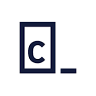

REKOMENDASI
QUIPPERMirip dengan Zenius dan Ruangguru, Quipper School adalah layanan pendidikan online baru khusus untuk guru dan siswa SMP dan SMA. Learning Management System ini dibuat untuk memfasilitasi guru dan murid dalam melaksanakan aktivitas belajar dan mengajar secara online. |
edXJika Anda ingin mengakses materi-materi pembelajaran dari berbagai institusi top dunia, edX adalah jawabnya. edX adalah salah satu MOOC yang populer di dunia. Website belajar online ini digarap oleh dua kampus elite dunia yaitu Harvard University dan MIT di tahun 2012. Tentu saja, dengan begitu, Anda bisa mengakses konten pembelajaran yang belum tentu ada di kelas-kelas umum. 
|
CodecademyCodecademy menyediakan banyak sekali materi pembelajaran terkait coding, jadi usahakan fokus dulu ke satu materi yang ingin dipelajari. Misalnya apakah Anda ingin belajar analisis data? Ataukah web development? Atau ilmu komputer? Tidak usah takut karena kurangnya pengalaman atau pengetahuan tentang coding. Karena, Codecademy akan membimbing Anda mempelajari kode sesuai dengan tingkat pengalaman Anda.  |
Back |